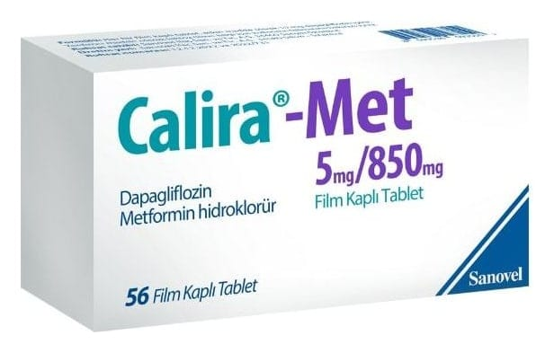

Calira-Met 5 mg/850 mg Film Kaplı Tablet, 56 adet

Ne için kullanılır
KT · Bölüm 1• CALİRA-MET turuncu, oval, bikonveks film kaplı tabletlerdir. CALİRA-MET 56 film kaplı tablet içeren PVC/PE/PVDC - Al folyo blister ve karton kutu ambalajlarda kullanıma sunulmaktadır. • CALİRA-MET etkin madde olarak 5 mg dapagliflozin ve 850 mg metformin hidroklorür içerir. Her iki etkin madde oral antidiyabetikler olarak bilinen ilaç grubundadır. • Tip 2 diyabette vücudunuz yeterli miktarda insülin üretemez veya üretilen insülini düzgün şekilde kullanamaz. Buna bağlı olarak kanınızda yüksek şeker (glukoz) düzeyi ortaya çıkar. CALİRA-MET aşağıdakilerin tip 2 diyabet tedavisi için kullanılır: - CALİRA-MET, tek başına metforminin tolere edilebilen maksimum dozu ile diyabetinizin kontrol edilemediği durumlarda kullanılır. - CALİRA-MET, metformin ve diyabet tedavisi için kullanılan diğer tıbbi ürünler ile diyabetinizin kontrol edilemediği durumlarda kullanılır.
- Dapagliflozin ve metformini ayrı ayrı tabletler halinde alıyorsanız, doktorunuz bu iki ilacı CALİRA-MET olarak almanızı isteyebilir. CALİRA-MET alıyorsanız, aşırı dozdan sakınmak için dapagliflozin ve metformin tabletlerini almaya devam etmeyiniz.
Doktorunuz, eczacınız veya hemşireniz tarafından verilmiş olan diyet ve egzersiz tavsiyesine uymaya devam etmeniz önemlidir.